This task involves installing Debian 12 on a virtual machine and then installing several software packages and performing various technical tasks under Debian 12 with the KDE/Plasma environment. Here's what I learned:
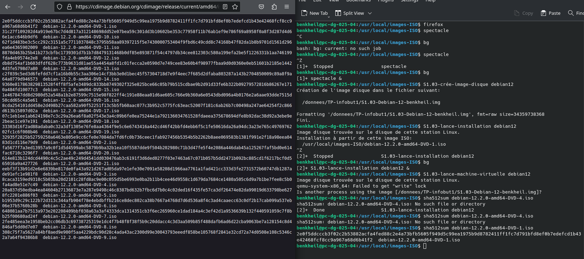
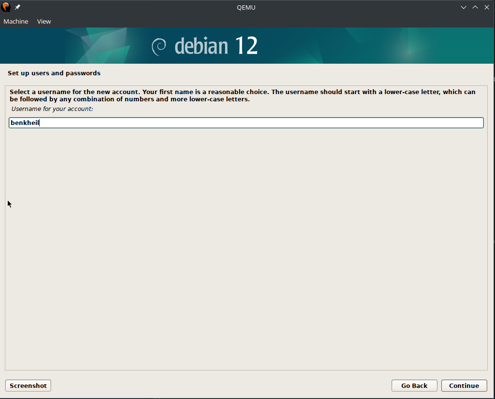
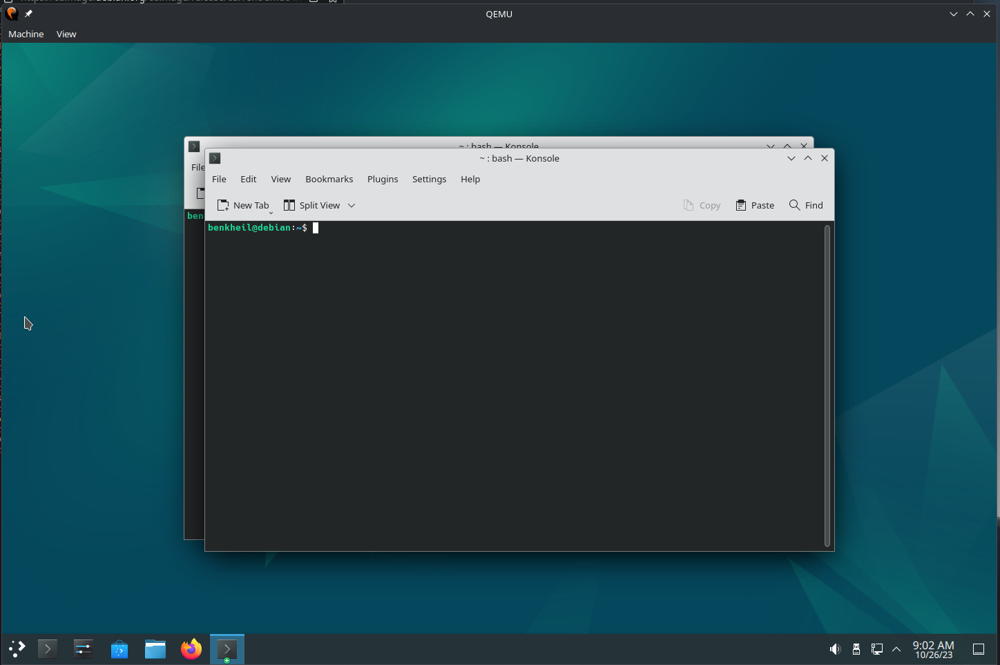
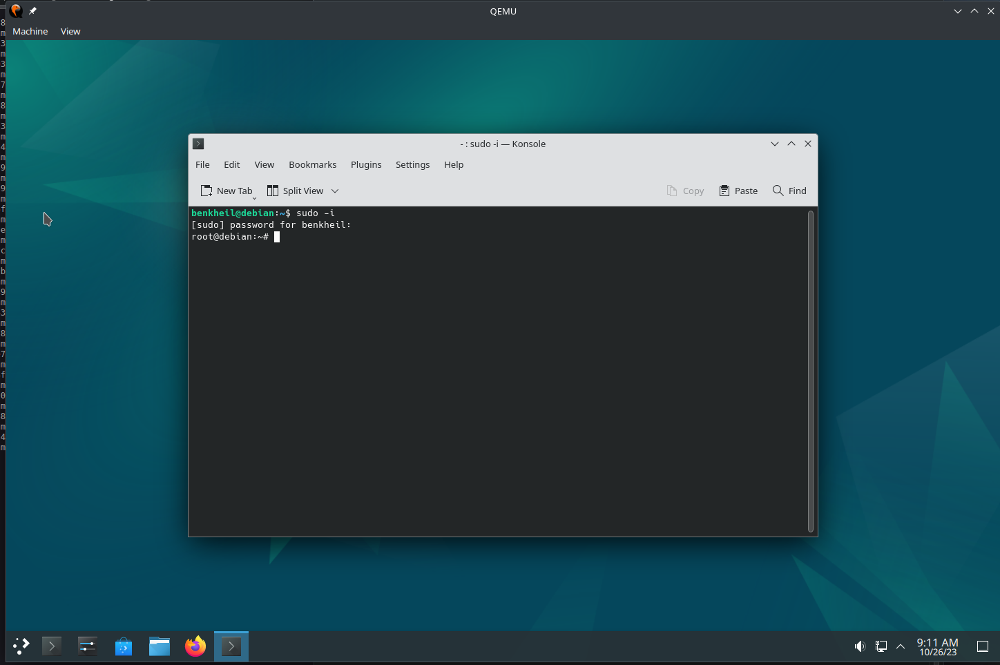
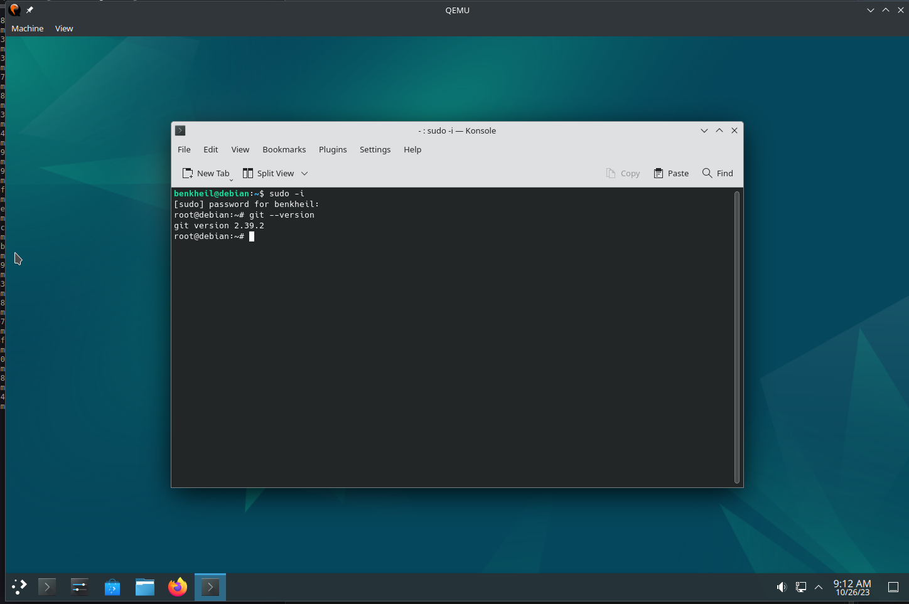
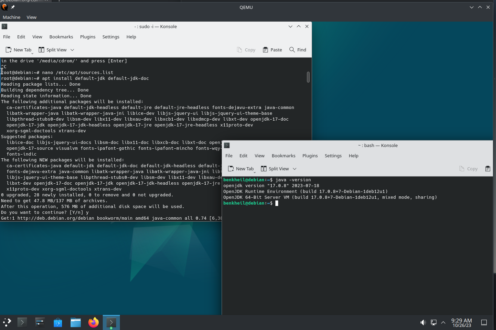
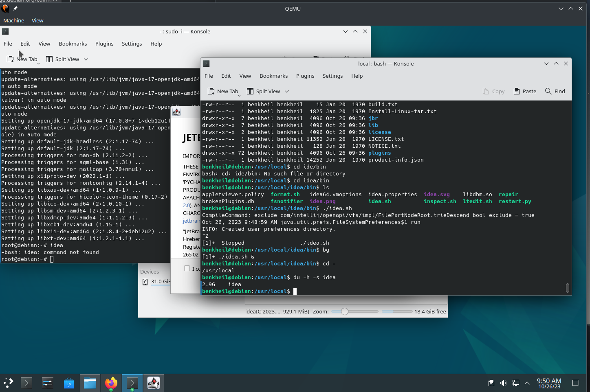
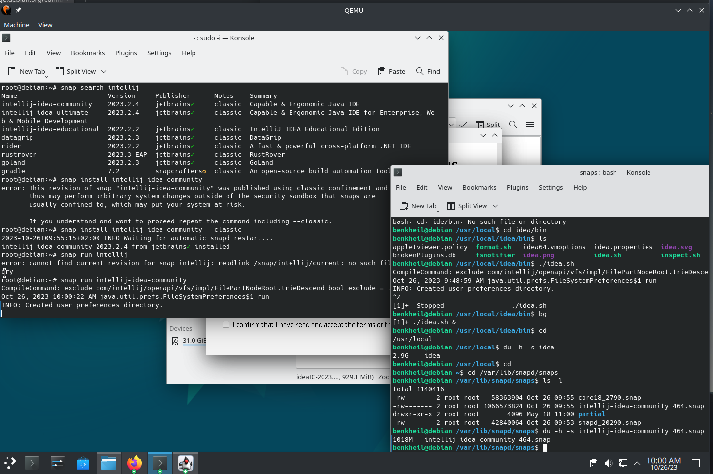
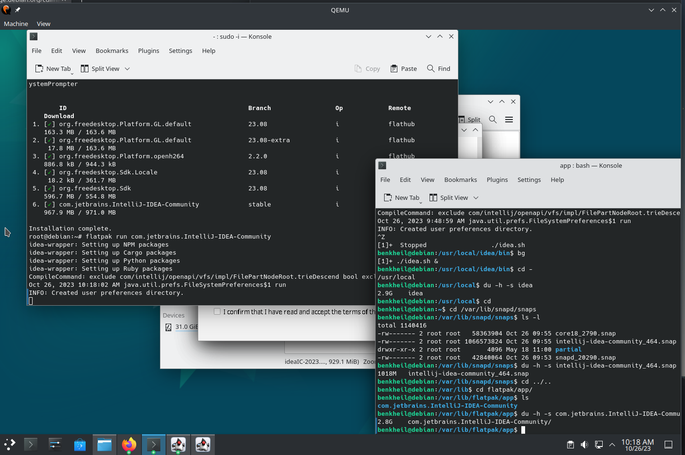
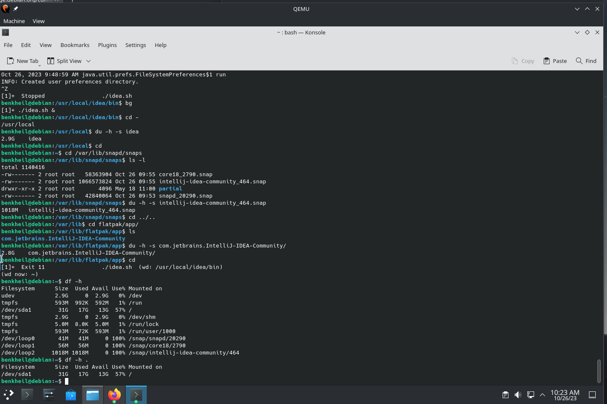
First, we conducted a needs assessment by gathering information about the Hardis Group company and reflecting on its digital and ecological transition.
Then, we designed a website mockup based on the gathered information, which we subsequently implemented in HTML/CSS to create the final website.
This experience taught us to work effectively in a team by dividing tasks according to our skills and availability.
We also developed our communication, project management, and web development skills.
This assessment was interesting because it allowed us to apply the knowledge acquired in class in a simulated professional context.
It also raised awareness about the importance of digital and ecological transition for companies in the digital sector.
Finally, we were asked to adopt a reflective attitude and evaluate the project. We reflected on the difficulties encountered, the strategies implemented, the skills acquired, and the overall project experience.
This assessment is particularly relevant in the field of computer science because it allowed us to develop technical skills in web development while raising awareness of the environmental and societal issues related to digital transition.
This assessment consists of several steps aimed at modeling a database (DB) representing the Titanic disaster, justifying this modeling, implementing it under PostgreSQL, performing compliance tests, and conducting queries to analyze the data in pairs or groups of three.
This assessment has taught me how to design an entity-relationship schema (ER) from raw data, translate it into a coherent relational schema (RS), implement it in a database management system (DBMS) like PostgreSQL, write SQL queries to query the database, and perform compliance tests to verify data integrity.
This assessment is interesting because it simulates a real case where skills in data modeling, database implementation, and querying are required. It allows for the practical application of theoretical knowledge acquired in class and the development of essential practical skills in the field of computer science.
This assessment helps develop these skills by providing hands-on experience in designing, implementing, and managing databases, which is crucial in many computer science fields such as software development, data analysis, machine learning, etc.
This assessment has allowed me to use my skills in data modeling, SQL writing, database management, as well as analysis and interpretation of results. It has also taught me the importance of rigor and precision in data manipulation.
You can downloadthe sql files down here.
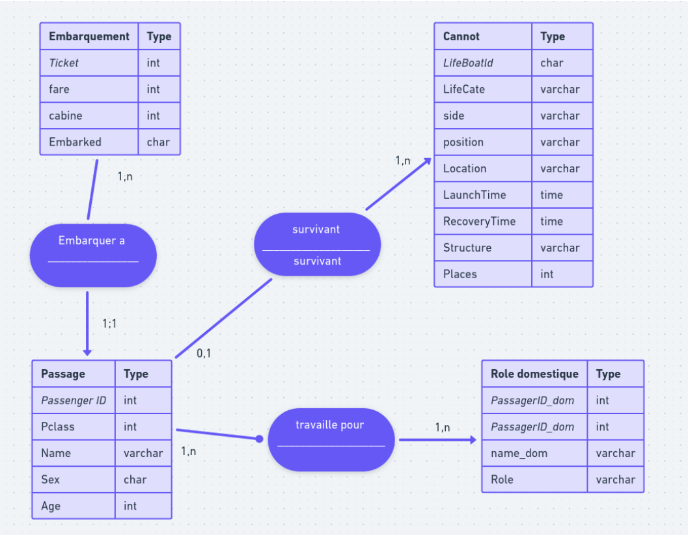
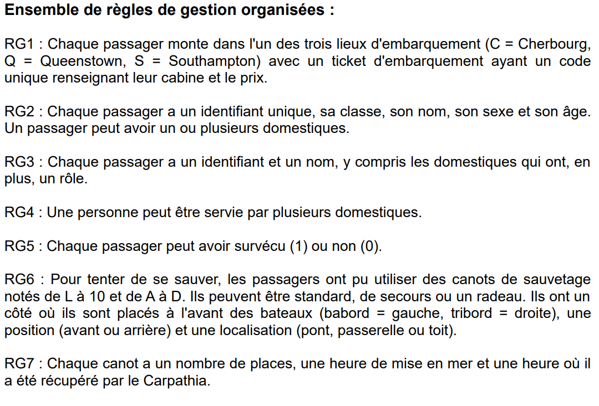
This evaluation allowed me to work in pairs on a project for the automatic classification of news articles into five different categories (environment-science, culture, economy, politics, sports). The project was divided into two main parts.
In the first part, I had to manually construct lexicons for each category based on a hundred example news articles provided. Then, I developed a program that calculated a score for each category for each news article based on the words present in the lexicons and assigned each news article to the category with the maximum score.
The second part of the project involved automating the construction of lexicons by developing a machine learning method. I had to analyze the file 'depeches.txt' to extract the most representative words for each category by calculating a score for each word based on its frequency in the category and specificity. These scores were then used to automatically generate the lexicons.
This project allowed me to acquire several important skills in computer science, including: